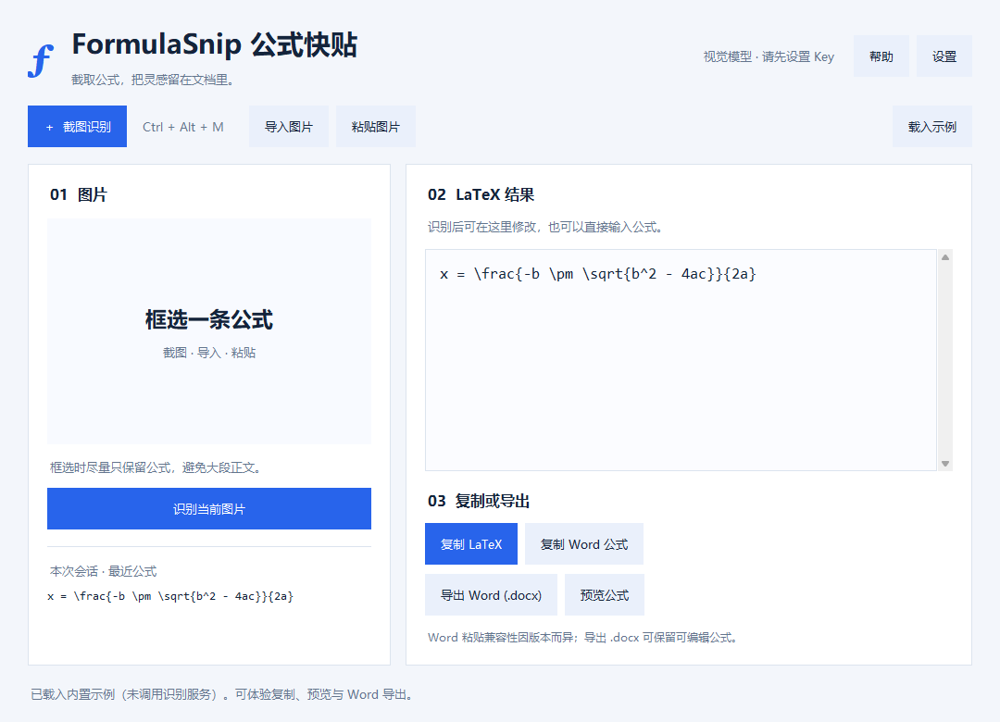
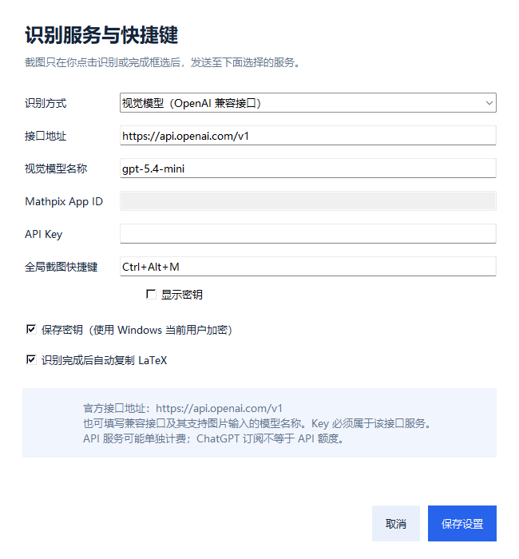

FORMULASNIP · 1.0.0
一截，一识别，
让公式进入你的文档。
Windows 10 / 11 · 64 位便携版 · 中文界面 · 使用你自己的云端识别服务
三步开始使用
- 完整解压后双击 FormulaSnip.exe，无需安装 Python。
- 打开设置，选择识别服务，填写自己的 API Key，保存。
- 按 Ctrl + Alt + M 拖动框选公式。松开鼠标自动识别；按 Esc 或右键取消。
右侧会显示可编辑 LaTeX，默认自动复制。也可以导入图片或粘贴图片，再点击“识别当前图片”。
还没有 Key？点击载入示例，可以先体验 LaTeX 复制、离线预览和 Word 导出，不会调用识别接口。

第一次配置识别服务
| 识别方式 | 需要填写 |
|---|---|
| 视觉模型 OpenAI 兼容接口 | 接口地址、支持图片的模型名称、该服务的 API Key。 OpenAI 官方地址： https://api.openai.com/v1默认模型： gpt-5.4-mini。模型可改，须使用你的账号有权访问且支持图片与 Chat Completions 的模型。其他兼容服务请完全按其文档填写，Key 必须与该接口匹配。 |
| Mathpix | 填写 Mathpix 开发者账号的 App ID 和 App Key。界面的“API Key”框即 App Key。无需填写接口地址与模型。 |

把公式放进 Word
1. 复制 Word 公式
点击复制 Word 公式，回到 Word 正文按 Ctrl+V。工具提供 MathML、HTML 和文本剪贴板格式，Word 会按版本选择可用格式。
2. 导出 .docx
如果粘贴结果显示源码、空白或排版异常，点击导出 Word (.docx)。用 Word 打开导出的文档，其中是可继续编辑的原生公式。选中公式复制到你的论文或报告即可。
3. 使用 Word 的 LaTeX 输入
支持 LaTeX 输入的 Word 中，按 Alt+= 插入公式，在“公式”选项卡将输入方式选为 LaTeX，粘贴代码，再转换成“专业”格式。菜单名称随版本略有不同。
已检查原生公式结构并成功读取导出的 DOCX。本开发环境未安装 Word，实际 Word 粘贴和视觉显示尚未实测。
日常操作
| 操作 | 方法 |
|---|---|
| 截图并自动识别 | Ctrl+Alt+M，或点击“截图识别”。 |
| 取消截图 | Esc 或鼠标右键；小于 8×8 像素的框选也会取消。 |
| 识别已导入图片 | 点击“识别当前图片”，或 Ctrl+Enter。 |
| 修改与复制 | 右侧直接编辑；所有复制与导出按钮使用当前编辑内容。 |
| 恢复最近公式 | 点击左下角本次会话历史，保留最近 12 条。 |
| 预览公式 | 在默认浏览器离线显示 MathML，建议用 Edge 或 Chrome。 |
| 更换快捷键 | 设置中填写如 Ctrl+Shift+F9。支持 Ctrl/Alt/Shift + 字母、数字、F1–F11。 |
| 后台使用 / 退出 | 最小化后快捷键仍有效；关闭窗口即退出。下次需重新打开。 |
图片、密钥和文件如何处理
- 只在完成框选或点击识别时，将选中区域或导入的图片发送到你配置的服务。不会上传整张桌面。
- 截图与会话历史只保存在内存，关闭即清除；导出的 Word 文档由你自己保存。
- 勾选保存密钥时，使用 Windows 当前用户加密。设置文件在
%LOCALAPPDATA%\FormulaSnip\settings.json，不写入明文 Key。 - 切换识别服务时会清空密钥输入框，请重新填写相应服务的 Key。只使用自己信任的接口。
- 离线预览会生成本地临时 HTML，正常退出时清理。
遇到问题
识别失败：检查 Key、App ID、额度、模型名称，以及服务是否支持图片输入和 Chat Completions。连接失败时，检查网络与服务地区可用性。
快捷键没反应：确认工具仍在运行。被其他应用占用时，换成如 Ctrl+Shift+F9；也可点击截图按钮。
公式有错：框选时避开正文，放大模糊图片。核对上下标、希腊字母、括号和分式；可直接编辑结果。
Word 转换失败：常见分式、根号、上下标、求和、矩阵、分段和 aligned 多行已检查。自定义宏与部分高级排版不支持，请保留 LaTeX 或简化公式。
配置换电脑不能读取：密钥与 Windows 用户绑定，重新填写即可。